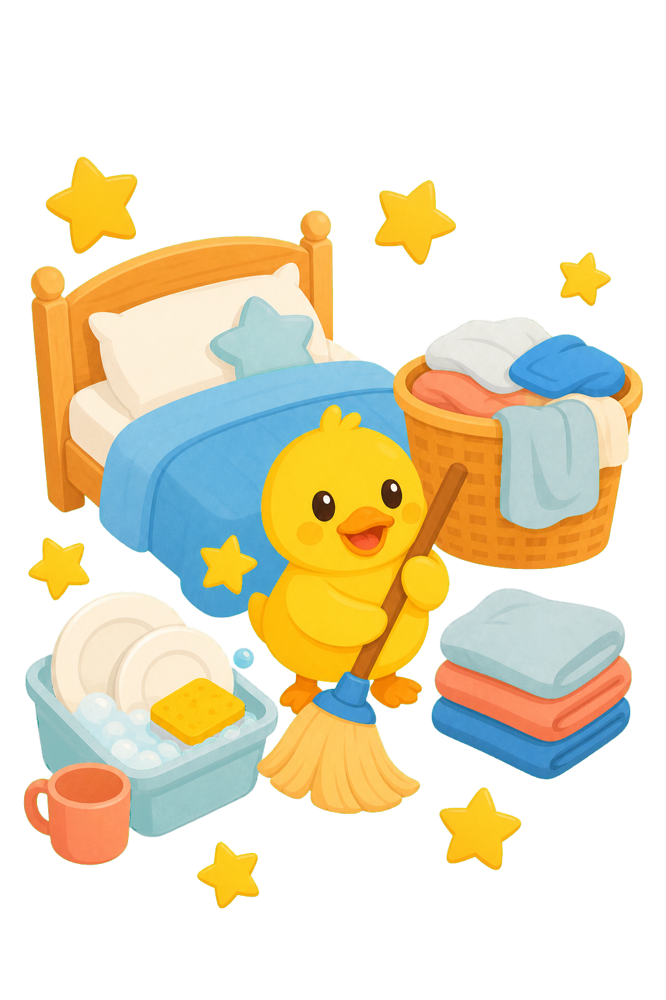

家长掌握节奏
创建家庭、孩子、规则和心愿。家长可以审核进度，也可以直接记录完成，不让流程挡住鼓励。
把家务、习惯、探索、学习和被看见的努力，变成星星、心愿、任务挑战与温暖的家庭记忆。
Turn chores, habits, exploration, learning, and recognized effort into stars, wishes, challenges, and warm family memories.
简单的记录方式，清晰的奖励边界，温柔但有方向的日常节奏。
创建家庭、孩子、规则和心愿。家长可以审核进度，也可以直接记录完成，不让流程挡住鼓励。

孩子端只需要看今天能做什么、获得了多少星星、离心愿还有多远，以及已经解锁的徽章。

叠被子、洗碗、整理衣服、扫地，都是可以被认真看见的成长。

阅读、探索、专注练习、表达感谢和勇敢尝试，也可以成为家庭规则。

星星是家庭内部的认可符号，不是货币。每一次通过，都让心愿更接近一步。


心愿鸭不催促孩子变得完美。它帮助一家人把目标拆成可完成的小步，让家长更容易表达认可，让孩子知道自己的努力真的有回应。
WishDuck is not about pushing children to be perfect. It turns goals into small steps, makes recognition easier, and helps children feel that effort matters.
从每天可以完成的小任务，到有主题、有进度、有奖励的家庭挑战，每一步都能被看见。
把一个大目标拆成今天能完成的小任务，完成后清楚看到进度。

叠被子、洗碗、整理和照顾自己，都可以成为值得认可的行动。
家庭可以一起制定规则、完成活动，并在每天结束时留下共同的进度。
星星和徽章记录坚持，完成挑战后把努力兑换成真正想实现的愿望。
心愿鸭正在准备第一版 iOS 体验。把一个愿望写下来，从一个今天就能完成的小目标开始。